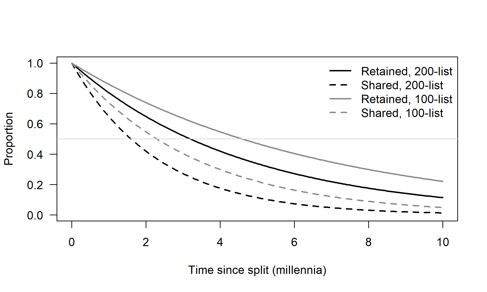
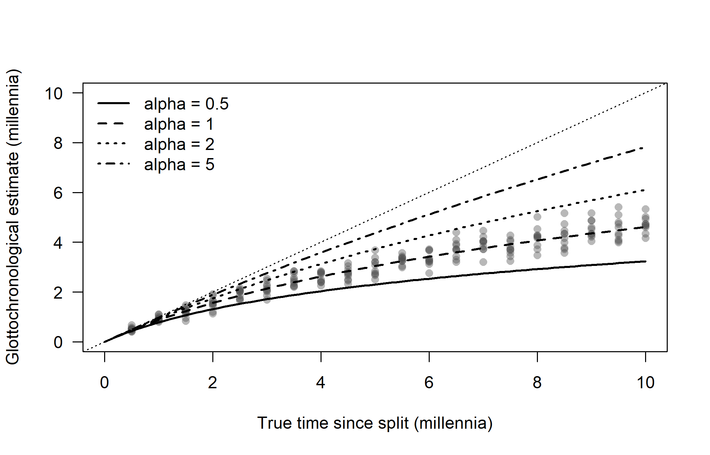
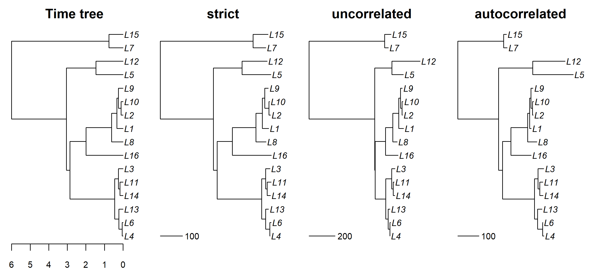
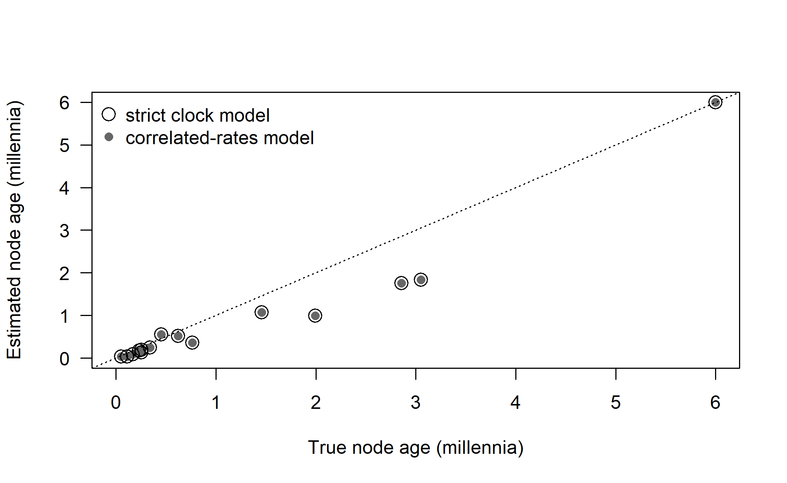
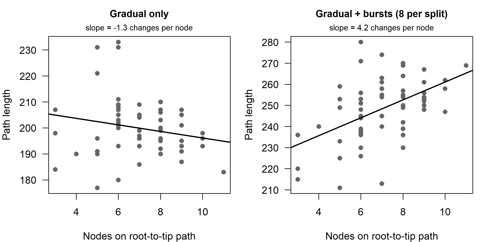

Chapter 9 Clock Models and Rates of Language Change
A phylogeny inferred from cognate data tells us how much change separates languages, not how much time. Turning change into time requires two things: a model of how the rate of change behaves along the branches of the tree, called a clock model, and external information that fixes the scale. This chapter follows the idea from glottochronology, which assumed that every language replaces its basic vocabulary at one universal rate, to the relaxed clocks of modern Bayesian phylogenetics, and then asks what linguistic phylogenetics has learned about the rates themselves. Its central lesson is that lexical data never identify rate and time separately. Every date is a joint product of the data, the clock model, the tree prior and the calibrations, and the first question to ask of any clock model is which of its parameters the data actually inform. Chapter 10 takes up calibration and the dates that have been obtained for particular families.
After reading this chapter you should be able to:
- explain why rate and time are confounded in every substitution model, and state which quantities (branch lengths, relative ages, absolute ages, branch rates) are identifiable under which assumptions;
- derive the glottochronological formula from its assumptions, and explain which assumptions failed and why rate variation among meanings biases its dates downward;
- distinguish strict, uncorrelated, autocorrelated, local and random local clocks, and penalized-likelihood rate smoothing, by what each assumes about rate variation among lineages;
- distinguish rate variation among characters from rate variation among lineages, and interpret a published clock rate in light of how the data were coded;
- date a simulated phylogram under several rate models with
ape::chronos(), and say which of the chapter’s simulations are parameter-recovery checks and which are misspecification experiments; - evaluate empirical claims about rates of language change (word frequency, punctuational bursts, grammar versus vocabulary, population size) in terms of their design and main confounds.
9.1 Why time is hard
Imagine two languages that have each replaced forty of the meanings on a two-hundred-item basic vocabulary list since they last shared a common ancestor. Did they separate a thousand years ago and change quickly, or three thousand years ago and change slowly? The cognate data alone cannot tell us. Every substitution model introduced in Chapters 5 and 7 depends on time \(t\) and rate \(r\) only through their product. The transition probability matrix for a branch is \[\begin{equation} \mathbf{P}(b) = e^{\mathbf{Q} b}, \qquad b = r \, t, \tag{9.1} \end{equation}\] where \(b\) is the branch length, measured in expected numbers of changes per character. Doubling the rate and halving the time leaves \(b\), and therefore the likelihood, unchanged. Rate and time are said to be confounded, or non-identifiable, from the data alone.
This is the central problem of all phylogenetic dating, in biology and linguistics alike. It has two parts. First, we need some external information that fixes the absolute scale of time: a calibration, such as the date at which a daughter language was first written down, or the archaeologically dated settlement of an island. Calibrations are the subject of Chapter 10. Second, we need a model that tells us how rates are allowed to vary from one branch of the tree to another. Without such a model, every branch could have its own rate, and the branch lengths of a tree estimated without a clock (a phylogram) would carry no information at all about the relative ages of its nodes. A clock model is a set of assumptions, ideally probabilistic, about how \(r\) varies across the branches of a tree. The strongest assumption is that \(r\) is the same everywhere. That is the strict clock, and it is where linguistic dating began.
A concrete example shows the stakes. Icelandic and Norwegian both descend from the Old West Norse spoken around the time Iceland was settled in the late ninth century CE. Over the following millennium, Norwegian replaced far more of its basic vocabulary than Icelandic did, partly through contact with Danish and Low German. A model that assumed a single rate for both lineages would place their split at different dates depending on which language it treated as typical. English and Frisian, or the Romance languages descended from a well-documented Latin, provide similar cases where the true time depth is known from written history, and where lineages have demonstrably changed at different speeds. Any credible clock model must accommodate such differences, and any credible dating analysis must say how much they matter.
9.1.1 What the data can and cannot identify
It helps to be precise about what is identified, and by what. In the vocabulary of Section 6.10:
- Branch lengths \(b_j = r_j t_j\) are identifiable under the model from the characters alone, and with a few hundred cognate sets they are practically estimable, up to the limits set by saturation on long branches (Section 7.3.1).
- Relative node ages are identifiable only under a clock model that ties the rates of different branches together. Under a strict clock, ratios of node ages are identified by the data. Under a relaxed clock, they are identified only in part: how each branch length is divided into rate and time depends on the prior on rates, so relative ages are informed jointly by the data and by that prior.
- Absolute ages and the absolute rate are not identifiable from the characters at all. Only calibrations identify them, and their precision has a floor, set by the uncertainty of the calibrations, that no amount of additional lexical data can lower (the infinite-sites argument of Section 10.1).
- Branch-specific rates in a relaxed clock are identifiable as a population, through the variance of the rate distribution, but individual rates are practically estimable only for branches that carry many changes or lie close to a calibration. The rates of single terminal branches are among the most poorly estimated quantities in any dated tree.
Identifiability is not the same as historical interpretability. A clock rate in a binary cognate analysis can be estimated precisely and still not correspond to any historically observable event, because it counts gains and losses of cognate classes rather than replacements of words (Section 9.6). A large coefficient of variation among branch rates is estimable, but whether it measures genuine differences in the tempo of change, or unmodeled borrowing, coding inconsistency and missing data, all of which also alter branch lengths, is a question of historical interpretation that the clock model cannot answer by itself. Nor is a parameter that is identifiable under the model necessarily robust to misspecification: the simulations in this chapter show how strongly dates depend on the match between the assumed and the real pattern of rate variation.
9.2 Glottochronology: the first strict clock
9.2.1 The model
In the early 1950s Morris Swadesh proposed that a small core of basic vocabulary, the meanings that every human language has a word for and that are rarely borrowed, is replaced at a roughly constant rate in all languages (Swadesh 1952, 1955). If that were true, the proportion of shared cognates between two related languages would be a clock. Robert Lees made the proposal quantitative (Lees 1953). He compiled thirteen pairs of language stages separated by known spans of time, for example Old English and Modern English, or Latin and its Romance descendants, and measured how much of a 200-item test list each had retained. He found that, on average, a language retains about 81 percent of its basic vocabulary per thousand years. Swadesh later shortened the list to 100 items, which he argued were more stable, with a retention rate of about 86 percent per millennium (Swadesh 1955). The enterprise of dating language splits in this way became known as glottochronology. The broader activity of classifying languages by shared-cognate percentages is lexicostatistics. Chapter 1 tells the history; here we take the model apart.
The model makes three assumptions. First, each meaning on the list is replaced independently of all others. Second, replacement is a memoryless process: in any short interval \(dt\), the word currently expressing a meaning is replaced with probability \(k\,dt\), where the replacement rate \(k\) is the same for every meaning, every language and every period. Third, the two daughter lineages descending from a common ancestor change independently, and a meaning that has been replaced in either lineage no longer yields a shared cognate.
The first two assumptions describe a Poisson process. The probability that the original word for a meaning survives for \(t\) millennia is \(e^{-kt}\). Writing \(\rho = e^{-k}\) for the retention rate per millennium (Lees’ 0.805, or Swadesh’s 0.86), the expected proportion of the list retained in one lineage after \(t\) millennia is \[\begin{equation} R(t) = e^{-k t} = \rho^{t}. \tag{9.2} \end{equation}\] Two sister languages share a cognate for a meaning only if both have retained the ancestral word. By the independence assumption, the expected proportion of shared cognates after a split \(t\) millennia ago is Solving for \(t\) gives the glottochronological formula: \[\begin{equation} t = \frac{\ln C}{2 \ln \rho}. \tag{9.4} \end{equation}\] This is the formula that appeared in introductory textbooks for half a century. If two languages share 50 percent cognates on the 200-item list, then \(t = \ln 0.5 / (2 \ln 0.805) \approx 1.6\) millennia. On the 100-item list with \(\rho = 0.86\), the same 50 percent would imply about 2.3 millennia.
In the language of Chapter 5, glottochronology is a strict molecular clock combined with a very simple substitution model. Each meaning is a character, a split resets nothing, every branch has the same rate \(k\), and distances between languages are converted to time by a fixed transformation. The formula is the linguistic counterpart of using a known substitution rate to convert a corrected genetic distance into a divergence time. Glottochronology also used a distance-based route from data to tree, in the spirit of Chapter 4, rather than a model of the whole tree at once. In the terms of Section 9.1.1, it made absolute time identifiable by fiat: the universal retention rate served as a calibration imported from other languages.
9.2.2 The retention curve in R
The following code draws the retention curves implied by Equations (9.2) and (9.3), and tabulates the dates that Equation (9.4) assigns to a range of shared-cognate percentages.
glotto_C <- function(t, rho) rho^(2 * t) # shared cognates
glotto_t <- function(C, rho) log(C) / (2 * log(rho)) # Equation (glotto)
t_grid <- seq(0, 10, by = 0.05) # millennia
plot(t_grid, 0.805^t_grid, type = "l", lwd = 2, ylim = c(0, 1),
xlab = "Time since split (millennia)", ylab = "Proportion",
las = 1)
lines(t_grid, glotto_C(t_grid, 0.805), lwd = 2, lty = 2)
lines(t_grid, 0.86^t_grid, lwd = 2, col = "grey55")
lines(t_grid, glotto_C(t_grid, 0.86), lwd = 2, lty = 2, col = "grey55")
abline(h = 0.5, col = "grey85")
legend("topright", bty = "n", lwd = 2, lty = c(1, 2, 1, 2),
col = c("black", "black", "grey55", "grey55"),
legend = c("Retained, 200-list", "Shared, 200-list",
"Retained, 100-list", "Shared, 100-list"))
Figure 9.1: Glottochronological retention curves. Solid lines: expected proportion of the list retained by a single language; dashed lines: expected proportion of cognates shared by two sister languages. Black: Lees’ 200-item list with a retention rate of 0.805 per millennium; gray: Swadesh’s 100-item list with 0.86.
C_vals <- c(0.90, 0.75, 0.60, 0.50, 0.40, 0.25, 0.10, 0.05)
glotto_tab <- data.frame(
shared = paste0(100 * C_vals, "%"),
t200 = round(1000 * glotto_t(C_vals, 0.805)),
t100 = round(1000 * glotto_t(C_vals, 0.86))
)
knitr::kable(glotto_tab, col.names = c("Shared cognates",
"Years (200-list, 0.805)", "Years (100-list, 0.86)"),
caption = "Glottochronological dates implied by different proportions of shared cognates.")| Shared cognates | Years (200-list, 0.805) | Years (100-list, 0.86) |
|---|---|---|
| 90% | 243 | 349 |
| 75% | 663 | 954 |
| 60% | 1177 | 1693 |
| 50% | 1598 | 2298 |
| 40% | 2112 | 3038 |
| 25% | 3196 | 4596 |
| 10% | 5308 | 7633 |
| 5% | 6905 | 9931 |
Table 9.1 makes one of glottochronology’s weaknesses immediately visible. The curve flattens as time increases, so at great time depths a small difference in the percentage of shared cognates translates into a very large difference in date. Going from 10 to 5 percent shared cognates adds well over a millennium on either list. Yet at those depths, a handful of chance resemblances or misjudged cognates can easily make up five percent of a 100-item list.
9.2.3 Sampling error
Even if every assumption of the model held, a 100- or 200-item list is a small sample. If each meaning is retained with probability \(C(t)\) independently, the number of shared cognates on a list of \(N\) items is binomially distributed with mean \(N C(t)\) and variance \(N C(t)(1 - C(t))\). The resulting uncertainty in the date can be large. The next chunk computes exact binomial confidence intervals for the shared proportion and transforms them into intervals on the date, for a range of observed counts on the 100-item list.
N <- 100
obs <- c(80, 60, 40, 20, 10)
ci <- t(sapply(obs, function(x) binom.test(x, N)$conf.int))
ci_tab <- data.frame(
shared = obs,
date = round(1000 * glotto_t(obs / N, 0.86)),
lower = round(1000 * glotto_t(ci[, 2], 0.86)),
upper = round(1000 * glotto_t(ci[, 1], 0.86))
)
knitr::kable(ci_tab, col.names = c("Shared (of 100)", "Point date (years)",
"Lower 95% (years)", "Upper 95% (years)"),
caption = "Binomial sampling uncertainty alone in glottochronological dates on a 100-item list, assuming the retention rate is known exactly.")| Shared (of 100) | Point date (years) | Lower 95% (years) | Upper 95% (years) |
|---|---|---|---|
| 80 | 740 | 449 | 1144 |
| 60 | 1693 | 1198 | 2316 |
| 40 | 3038 | 2279 | 3955 |
| 20 | 5336 | 4083 | 6850 |
| 10 | 7633 | 5755 | 9998 |
The intervals in Table 9.2 widen dramatically with time depth, and they ignore every other source of error: uncertainty in \(\rho\) itself, variation of \(\rho\) across lineages, borrowing, and coding mistakes. Even in the earliest discussions of the method, its proponents knew that individual dates carried uncertainties of several centuries. What they did not anticipate was how badly the core assumption of a universal constant rate would fare.
9.2.4 What went wrong
The critique of glottochronology came quickly and from several directions. Here we organize it by the assumption under attack. Excellent longer treatments are Embleton (1986) and McMahon and McMahon (2005).
Rates differ between languages. The most damaging empirical test was by Bergsland and Vogt (1962), who measured retention where the time depth is independently known (see the case study below). Icelandic had retained so much more of the test list than the model predicted that the formula would have placed its separation from the Old Norse of its own medieval texts at a small fraction of the documented time depth, and other languages with long written records, including Georgian and Armenian, retained different amounts over comparable spans. Other test cases in the literature showed the opposite problem, languages that had replaced their vocabulary faster than expected. Blust (2000) later made the same point at the scale of a whole family. Across Austronesian, languages separated by similar time depths, as judged from subgrouping and archaeology, vary enormously in how much basic vocabulary they share, and some lineages are dramatically more conservative than others. Blust concluded that the “universal constant” assumption is simply false for Austronesian.
Rates differ between meanings. Words for some meanings, such as low numerals, pronouns and certain body parts, are replaced far more slowly than words for others, such as ‘dirty’, ‘to throw’ or ‘to play’. This was clear to Swadesh himself and was one motivation for his shortened list. As we show in Section 9.2.5, rate variation among meanings does not merely add noise. It biases glottochronological dates downward, more and more severely as time depth increases.
The mathematics was shaky. Chrétien (1962) argued that the mathematical models presented in support of glottochronology contained serious errors and that the claimed constancy had not been established. Later work proposed corrected formulations, including models with meaning-specific rates (see the review in Embleton 1986). Some Russian scholars, notably Sergei Starostin, developed a revised glottochronology that excluded loanwords and modified the decay function. These revisions improved some results but did not resolve the deeper problem of variable rates across lineages.
Borrowing and chance inflate shared percentages. If one language borrows a basic word from its sister, or if both borrow from the same source, the pair will appear to share a cognate that they did not inherit. Chance resemblances, which become proportionally more important as genuine cognates decay, have the same effect. Both biases make languages look closer than they are and dates younger; Section 8.3 quantifies the effect of borrowing by simulation.
The list and its coding matter. Different scholars coded the same languages differently, chose different words when a language has several synonyms for a meaning, and used different versions of the list. Because the formula is very sensitive to the shared percentage at great depths, small coding differences translated into large date differences.
Distances are not trees. Glottochronology computed a date for each pair of languages independently. Dates for different pairs need not be mutually consistent, and nothing in the method ensured that the dated pairs fitted together into a single tree. The information in other languages about the history of a pair was ignored.
Bergsland and Vogt (1962) tested glottochronology on cases where the answer was known. They compared modern languages with their own documented ancestors, so that the time depth was given by the written record. Icelandic, compared with Old Norse, had retained so much of the basic vocabulary list that the formula implied a time depth far shorter than the one documented in writing. Other cases deviated by different amounts, so no single constant could fit them all. Because the test cases were the very kind of data on which the retention constant had been calibrated, the results showed that the constant was not constant. The paper, published with a range of commentaries in Current Anthropology, is often cited as the moment glottochronology lost its credibility among historical linguists. It is worth reading with a modern eye: what Bergsland and Vogt documented is exactly the among-lineage rate variation that relaxed clocks were designed to model. It is also an early example of what Section 10.8 calls independent validation: dates checked against historical evidence that played no part in estimating them.
9.2.5 Rate variation among meanings biases dates
Of all these problems, rate heterogeneity among meanings has the most instructive consequences, because it produces a systematic bias rather than random error. Suppose each meaning has its own replacement rate, drawn independently from a gamma distribution with mean \(\bar{k}\) and shape parameter \(\alpha\), the model of among-character rate variation introduced in Section 7.5. Fast meanings are lost early, so what remains shared at great depths is dominated by the stable meanings, and shared cognates decay more slowly than the exponential curve of Equation (9.3). A glottochronologist who knows the mean rate \(\bar k\) exactly and applies Equation (9.4) therefore underestimates every date. The expected estimate is approximately \[\hat{t} \approx \frac{\alpha}{2 \bar{k}} \ln\left(1 + \frac{2 \bar{k} t}{\alpha}\right),\] which is always less than the true time \(t\) and grows only logarithmically with it: the deeper the split, the worse the underestimate.
The derivation of the gamma-averaged shared-cognate curve (Equation (C.7)) and of the bias of the glottochronological estimate (Equation (C.8)), a numerical check of both, and the code for Figure 9.2 are in Section C.3.1.
Figure 9.2 makes the point concrete. We take a 200-meaning list with mean retention 0.86 per millennium, draw meaning-specific rates from a gamma distribution with shape \(\alpha = 1\), simulate the independent survival of each word along two lineages, and apply the classical formula to the resulting shared percentages. In the vocabulary of Section 6.10, this is a test of robustness under misspecification: the data are generated with rate variation among meanings that the glottochronological formula ignores.

Figure 9.2: Rate heterogeneity among meanings biases glottochronological dates. Each point is one simulated pair of languages (200 meanings, gamma-distributed replacement rates with shape 1, mean retention 0.86 per millennium), dated with the classical formula. Curves show the expected estimate implied by the gamma model for several values of the gamma shape parameter; the diagonal is the true time.
With \(\alpha = 1\), a moderate level of heterogeneity, a true split of ten millennia is estimated at well under half that. Studies of Indo-European and Austronesian vocabulary suggest that rate variation across meanings is at least this strong (Sections 7.5 and 9.7). This single effect is enough to explain why glottochronology systematically produced shallow dates for old families. It also explains why the remedy is not to abandon dating. Modern phylogenetic models of lexical change include among-character rate variation, typically with the same gamma distribution, and estimate \(\alpha\) from the data (Pagel 2000; Gray and Atkinson 2003). The bias in Figure 9.2 is then removed in expectation, provided that the gamma model describes the real rate variation adequately; Section 7.10 shows how to check whether it does.
It is common to read that phylogenetic dating “is just glottochronology with more computing power.” The criticism has a grain of truth: both convert amounts of lexical change into time and both depend on calibration. But the differences are substantive. Modern methods (i) model rate variation across meanings explicitly rather than assuming a single constant; (ii) allow rates to vary across lineages through relaxed clock models; (iii) estimate rates from multiple internal calibrations within the family under study rather than importing a universal constant; (iv) infer a single tree for all languages jointly, using all the data at once; and (v) report uncertainty that integrates over topology, branch lengths, rates and calibrations. Atkinson et al. (2005) and Gray et al. (2011) set out this case in detail. Whether these improvements are enough is an empirical question, and Chapter 10 and Chapter 15 discuss the evidence on both sides.
9.2.6 Lexicostatistical dating after glottochronology
Distance-based dating did not disappear. The Automated Similarity Judgment Program (ASJP), which compares phonetically transcribed 40-item word lists for thousands of languages, developed an automated dating method calibrated on dozens of historically or archaeologically dated splits (Holman et al. 2011). Instead of cognate percentages, it uses a normalized Levenshtein distance between word forms (Chapter 4), which is converted to a date through an empirically fitted relationship. ASJP chronology makes no claim that the rate is universal for any single pair. It treats the calibration relationship as a statistical average with substantial scatter, and reports correspondingly wide intervals. The method is valuable for a first approximation of time depths across the world’s families, many of which have never been dated phylogenetically. But it inherits several of glottochronology’s problems: a pairwise rather than tree-based treatment, and no explicit model of lineage-specific rates. The 40-item ASJP list was itself chosen by ranking meanings according to their stability across language families (Holman et al. 2008), an empirical counterpart of Swadesh’s intuition that some meanings change more slowly than others.
The generalized Bayesian dating of Rama and Wichmann (2020), discussed in Section 10.9.16, replaces family-specific calibrations by a single regression of known time depths on tree lengths. In the same comparison, an automated version of glottochronology performed worse than both it and ASJP chronology. A generalized calibration of this kind reintroduces, at the level of whole trees, the assumption of a common rate that the relaxed clocks below were designed to avoid, which is why its dates, like those of ASJP, are best read as first approximations.
A cautionary contemporary of the first Bayesian datings is Forster and Toth (2003), who adapted the network methods and dating approach of genetics to a small, hand-coded set of Celtic and Indo-European word forms, including Gaulish inscriptions, and obtained a tentative date of 8100 BCE (\(\pm\) 1,900 years) for Proto-Indo-European. McMahon and McMahon (2005) criticized the very small dataset, the unexplained assignment of words to character states and the neglect of borrowing within Celtic, contrasted it with the expert cognate data and broad sampling of Gray and Atkinson (2003), and still declined, in 2005, to recommend any linguistic dating method, arguing that where contact dominates there may be no branching points left to date.
9.3 From glottochronology to molecular clocks
At almost the same time that glottochronology was being discredited in linguistics, biologists proposed the molecular clock. Zuckerkandl and Pauling (1965) observed that the number of amino-acid differences between the hemoglobins or cytochromes c of different species increased roughly linearly with the time since the species diverged, as estimated from fossils. The neutral theory of molecular evolution then offered an explanation (Kimura 1968). If most substitutions are selectively neutral, the rate at which they become fixed in a population equals the mutation rate. Kimura’s argument is short and worth knowing, because it has a linguistic analog that we revisit in Section 9.10. In a diploid population of \(N\) individuals, \(2N\mu\) new neutral mutations arise per generation, and each has a probability \(1/(2N)\) of eventually becoming fixed. The substitution rate is the product, \(2N\mu \times 1/(2N) = \mu\), independent of population size.
The molecular clock was never exact. Rates differ between genes, between sites within genes, and between lineages. Rodents, with short generation times, accumulate substitutions faster than primates in many genes. The nearly neutral theory (Ohta 1973) showed that if many mutations are slightly deleterious, they behave as neutral in small populations but are purged by selection in large ones, which makes the rate depend on population size after all. Over the following decades the “clock” became a family of statistical models in which the rate is a quantity to be modeled and estimated, rather than a constant to be assumed. Bromham and Penny (2003) and Kumar (2005) review this history. Ho and Duchêne (2014) and Bromham, Duchêne, et al. (2018) review modern methods, and the textbooks by Felsenstein (2004) and Yang (2014) give the mathematics.
The parallel with linguistics is close but imperfect. Swadesh’s constant rate of vocabulary retention resembles the original molecular clock. The linguistic data that undermined glottochronology resemble the data showing rate variation among genes and lineages. And the response in both fields was, eventually, the same: to stop treating the rate as a known universal constant and to model its variation statistically, estimating it from calibrations internal to the group under study. Linguistics made the transition about four decades later than biology, through the work of Gray and Atkinson (2003) and others, by borrowing the biological methods wholesale (Atkinson and Gray 2005).
9.4 The strict clock
Under a strict clock, every branch of the tree has the same rate \(r\). The tree is ultrametric: all tips that are sampled at the same time are equidistant from the root (Chapter 2). Branch lengths in time units, \(t_j\) for branch \(j\), are determined by the ages of the nodes at either end. The branch lengths in expected changes per character are \(b_j = r\,t_j\). Rather than \(2n - 3\) free branch lengths for an unrooted tree of \(n\) languages, a strict-clock tree has \(n - 1\) node ages and one rate. Fixing one age by calibration, or setting \(r = 1\) to obtain relative ages, leaves \(n - 2\) free parameters to estimate in addition to the rate. Even a strict clock does not tick like a metronome. Under the CTMC, changes arrive after random waiting times, so two sister lineages evolving at exactly the same rate will usually accumulate different numbers of changes; the strict clock is a statement about expected amounts of change, and a test of it must ask whether the differences between lineages exceed this stochastic scatter.
The strict clock can be tested with a likelihood ratio test (Chapter 5). Fit the tree with and without the clock constraint. Twice the difference in maximized log-likelihood is approximately \(\chi^2\)-distributed with \(n - 2\) degrees of freedom, the difference in the number of free branch-length parameters (Felsenstein 2004). With linguistic data the test almost always rejects the strict clock for families of any size, which is unsurprising given the evidence in Section 9.2.4. A simpler diagnostic is the regression of root-to-tip distance on sampling time, discussed in Section 10.5.2. For contemporaneous tips, the coefficient of variation of root-to-tip distances in a rooted phylogram is a rough index of departure from clocklike behavior.
A strict clock nonetheless has its uses. It is the most parsimonious model and has the fewest parameters, so it can be preferable when data are few and the family is shallow. It is also a sensible null model for Bayesian model comparison by marginal likelihoods (Chapter 6). Its single rate still needs a prior, and when not even the order of magnitude of the rate is known a prior that is uniform on the logarithm of the rate (a log-uniform prior, as in the RevBayes scripts of Appendix H) spreads the prior mass evenly over orders of magnitude instead of piling it onto the largest values allowed, as a uniform prior on the rate itself would. Several linguistic studies have compared strict and relaxed clocks with Bayes factors, and the relaxed clock is usually, though not always, preferred.
9.5 Relaxed clocks
A relaxed clock allows each branch \(j\) to have its own rate \(r_j\). Because the rates are not identifiable from the data branch by branch (Equation (9.1)), they must be tied together by a model. In a Bayesian analysis, the model is a prior distribution on the branch rates. That prior encodes an assumption about how rates vary, and the posterior combines it with calibrations and the tree prior to apportion each branch length \(b_j\) between rate and time. Two broad families of models exist. In uncorrelated models, rates on different branches are drawn independently. In autocorrelated models, rates evolve along the tree, so that closely related lineages tend to have similar rates. Table 9.3 summarizes the models discussed in this section.
| Clock model | Assumption about rates among lineages | Main parameters | What the data identify | Typical software |
|---|---|---|---|---|
| Strict | One rate for all branches | Mean rate | Relative ages; the rate only with calibrations | All |
| Uncorrelated lognormal (UCLN) | Independent lognormal rate per branch | Mean rate, spread \(\sigma\) | Spread of rates; individual rates poorly, especially on terminal branches | BEAST, BEAST 2, MrBayes, RevBayes |
| Uncorrelated exponential (UCED) | Independent exponential rate per branch (coefficient of variation fixed at 1) | Mean rate | As UCLN, with the spread fixed in advance | BEAST, BEAST 2 |
| Autocorrelated (geometric Brownian motion) | Log rate drifts along the tree | Mean rate, drift variance \(\nu\) | Clade-level rate trends, if branches are short relative to the drift | MCMCTree, PhyloBayes, RevBayes |
| Local clock | A few pre-specified clades have their own constant rates | One rate per clade | Rate differences between the specified clades | BEAST, BEAST 2, RevBayes |
| Random local clock | An unknown number of rate shifts at unknown places | Shift indicators and multipliers | Number and placement of strong shifts, if any | BEAST, BEAST 2 |
| Penalized likelihood | Rates of adjacent branches should be similar (smoothing parameter \(\lambda\)) | Branch rates, node ages, \(\lambda\) | Point estimates only; depends on \(\lambda\) | r8s, treePL, ape::chronos() |
The mathematical definitions of the uncorrelated lognormal and geometric Brownian motion clocks (Equations (C.9) and (C.10)), with the derivation of their mean-one parameterization and of the coefficient of variation, are in Section C.3.2. The penalized-likelihood objective function (Equation (C.11)) and the cross-validation of its smoothing parameter are in Section C.3.4.
9.5.1 Uncorrelated relaxed clocks
The uncorrelated relaxed clocks of Drummond et al. (2006) are the default in BEAST and its descendants, and they are the most widely used clock models in linguistic phylogenetics. In the uncorrelated lognormal (UCLN) model, the rate of each branch is the mean clock rate \(\bar r\) multiplied by an independent random factor drawn from a lognormal distribution with mean one. The standard deviation \(\sigma\) of the logarithm of these factors measures how “relaxed” the clock is. A more interpretable quantity is the coefficient of variation of the branch rates, \(\sqrt{e^{\sigma^2} - 1}\), which is close to \(\sigma\) when \(\sigma\) is small. Values near zero indicate a nearly strict clock. Values around 0.3 to 0.5 are common in molecular data sets, and values above 1 indicate extreme rate heterogeneity. In the uncorrelated exponential (UCED) model, rates are drawn from an exponential distribution with mean \(\bar{r}\), which implies a coefficient of variation fixed at one. Because the exponential has its mode at zero, the UCED model gives many branches very low rates. It is less often appropriate than the UCLN but is a useful alternative in model comparison.
In practice, BEAST originally implemented these models by discretizing the rate distribution into as many equiprobable categories as there are branches and assigning each branch to a category. Later implementations sample continuous rates or rate quantiles. A summary statistic routinely reported is the covariance of rates between parent and child branches. If its posterior distribution spans zero, there is little evidence for autocorrelation, which supports the choice of an uncorrelated model.
The uncorrelated models are attractive because they make weak assumptions and are computationally convenient. They have a less attractive property. Because a rate is drawn independently for every branch, a long terminal branch can be explained either by a long time or by a high rate on that one branch. The model has no way to borrow strength from neighboring branches. Rates and times on terminal branches are therefore identifiable under the model only through the prior, which makes them poorly estimable in practice, and the posterior can be strongly influenced by calibrations and the tree prior. This matters for ancient languages used as dated tips (Section 10.5): an ancient language on a long terminal branch tells the model little about the rate if that branch is free to have its own rate.
9.5.3 Local clocks and random local clocks
Some rate variation is better described as a few discrete shifts than as continuous scatter. A local clock model allows different, internally constant rates in specified parts of the tree (Yoder and Yang 2000). One might give the Polynesian clade within Austronesian its own rate, for example, to test whether rates changed when speakers settled the remote Pacific. Local clocks require the shifts to be specified in advance. The random local clock (RLC) of Drummond and Suchard (2010) removes this requirement. Each branch has an indicator for whether the rate changes at its start, a rate multiplier applies to that branch and its descendants until the next change, and the number of changes is given a prior (for example, a Poisson distribution with a small mean). MCMC then averages over the number and placement of rate shifts. When the posterior favors zero shifts, the RLC reduces to a strict clock. When it favors many, it approaches an uncorrelated relaxed clock. The compound Poisson process of Huelsenbeck et al. (2000) is a related idea in which rate changes occur as random events along branches. Random local clocks are well suited to a linguistic question discussed below: whether particular lineages, such as those that underwent rapid geographic expansion or intense contact, show discrete rate shifts.
9.5.4 The optimized relaxed clock
The uncorrelated relaxed clock is notoriously slow to mix in MCMC. Branch rates and node ages are strongly correlated in the posterior, because changing a node age while keeping its branch lengths fixed requires compensating changes in the rates of all adjacent branches; this posterior correlation is the computational face of the rate-time confounding of Section 9.1. Douglas et al. (2021) introduced the optimized relaxed clock (ORC) package for BEAST 2. It combines several improvements: a parameterization of branch rates by real values rather than by discrete categories, proposals that change node ages and rates jointly so as to keep the genetic distances approximately constant, and adaptive weighting of operators. The model is still the uncorrelated lognormal clock. What changes is how efficiently MCMC explores it, which in practice determines whether an analysis of hundreds of languages converges at all (Chapter 6). Recent linguistic analyses in BEAST 2 increasingly use the ORC.
9.5.5 Penalized likelihood and rate smoothing
Before Bayesian relaxed clocks were widely available, the main tools for dating trees with variable rates were semi-parametric. Sanderson (1997) proposed nonparametric rate smoothing (NPRS), which chooses node ages that minimize the squared differences between the rates of adjacent branches. Sanderson (2002) then proposed penalized likelihood (PL), which balances the fit of a set of node ages and branch rates to the branch lengths of an estimated phylogram against a penalty on differences between the rates of adjacent branches. A smoothing parameter \(\lambda\) sets the balance. With \(\lambda\) very large, the rates are forced to be equal and the method approaches a strict clock. With \(\lambda\) near zero, the rates are free and the ages are poorly determined. Sanderson proposed choosing \(\lambda\) by cross-validation: drop each terminal branch in turn, predict its length from the rest of the tree, and choose the \(\lambda\) that minimizes prediction error.
Gray and Atkinson’s influential dating of Indo-European (Gray and Atkinson 2003) used penalized likelihood, applied to a sample of trees from a Bayesian posterior distribution, with fourteen historically known calibrations. PL remains useful for quick analyses and for very large trees where full Bayesian dating is impractical. In R, the function chronos() in ape implements a penalized-likelihood framework with several rate models (Paradis 2013). Its "correlated" model penalizes differences between the rates of adjacent branches. Its "relaxed" model penalizes departures of the rate distribution from a gamma distribution, without regard to which branches are adjacent. Its "discrete" model assigns branches to a small number of rate categories, and its "clock" model forces a single rate. Paradis also proposed an information criterion, \(\Phi\)IC, for comparing these models. Penalized likelihood gives point estimates; uncertainty must be obtained by repeating the analysis over a sample of trees, as Gray and Atkinson did, and that captures topological and branch-length uncertainty but not calibration uncertainty.
9.5.6 Simulating and estimating clocks in R
To see how the clock models behave, we simulate a time tree, impose three different patterns of rate variation on it, convert the result into a phylogram with stochastic numbers of lexical changes on each branch, and then try to recover the node ages with chronos(). We imagine a family of sixteen languages whose root is 6,000 years old, and a dataset in which about 80 lexical changes (cognate gains and losses across the whole list) are expected per millennium per lineage at the mean rate. The three scenarios are a strict clock, an uncorrelated lognormal clock with \(\sigma = 0.6\), and an autocorrelated clock with drift variance \(\nu = 0.15\) per millennium.
The simulation code (time tree, branch rates under the three clock models and Poisson numbers of changes) is listed in Section C.3.3.
The coefficients of variation of the simulated branch rates are 0, 0.65 and 0.4 for the strict, uncorrelated and autocorrelated scenarios. (A constant of 0.5 is added to each branch’s count simply to avoid zero-length branches, which chronos() cannot handle.) Figure 9.3 shows the true time tree and the three phylograms. Under the strict clock the phylogram is nearly ultrametric, apart from Poisson noise. Under the uncorrelated clock, individual branches are stretched or shrunk at random. Under the autocorrelated clock, whole clades are stretched or shrunk together, which makes rate variation easier to mistake for differences in time.

Figure 9.3: A simulated time tree (left) and phylograms produced from it under a strict clock, an uncorrelated lognormal relaxed clock and an autocorrelated (geometric Brownian motion) clock. Phylogram branch lengths are numbers of simulated lexical changes.
Now we date each phylogram, fixing the root at its true age of six millennia, under four of the rate models available in chronos(), and compare the estimated node ages with the true ones by the root-mean-square error (RMSE). In the vocabulary of Section 6.10, the strict-clock phylogram dated under the strict-clock model is a parameter-recovery check: the data were generated under the model’s own assumptions. Every other cell of the resulting table is a test of robustness under misspecification, because none of the penalties in chronos() is the process that generated the data. None of the cells says anything about empirical adequacy for real cognate data.
true_ages <- branching.times(time_tree)
models <- c("clock", "correlated", "discrete", "relaxed")
fit_one <- function(ph, model) {
# root fixed at its true age; lambda = 1 for every model
cal <- makeChronosCalib(ph, node = "root", age.min = 6, age.max = 6)
ctrl <- chronos.control(nb.rate.cat = 3)
suppressWarnings(chronos(ph, lambda = 1, model = model,
calibration = cal, quiet = TRUE, control = ctrl))
}
fits <- lapply(phylograms, function(ph)
setNames(lapply(models, fit_one, ph = ph), models))
rmse <- sapply(fits, function(f) sapply(f, function(ch)
sqrt(mean((branching.times(ch) - true_ages)^2))))
est_unc <- sapply(fits$uncorrelated[c("clock", "correlated")],
branching.times)
# the two models give almost identical ages: draw the filled points first
# and the larger open circles on top, keeping both visible
plot(true_ages, est_unc[, "clock"], type = "n", xlim = c(0, 6),
ylim = c(0, 6), las = 1, xlab = "True node age (millennia)",
ylab = "Estimated node age (millennia)")
points(true_ages, est_unc[, "correlated"], pch = 16, col = "grey40")
points(true_ages, est_unc[, "clock"], pch = 1, cex = 1.6, lwd = 1.2)
abline(0, 1, lty = 3)
legend("topleft", bty = "n", pch = c(1, 16), col = c("black", "grey40"),
pt.cex = c(1.6, 1), pt.lwd = c(1.2, 1),
legend = c("strict clock model", "correlated-rates model"))
Figure 9.4: Node ages estimated by penalized likelihood (chronos) against the true ages, for the phylogram simulated under the uncorrelated relaxed clock. The diagonal marks perfect estimation.
| strict | uncorrelated | autocorrelated | |
|---|---|---|---|
| clock | 0.03 | 0.52 | 0.28 |
| correlated | 0.03 | 0.52 | 0.29 |
| discrete | 0.03 | 0.52 | 0.96 |
| relaxed | 1.24 | 1.26 | 1.31 |
Table 9.4 is worth studying, because it shows several general lessons on a small scale. When the data really are clocklike, the strict clock model recovers the node ages almost perfectly. When rates vary, every model makes errors of several hundred years even though the root age is known exactly, because rate and time on internal branches can trade off. In this small example, the correlated-rates model, whose penalty is designed for autocorrelated rates, does no better than the strict clock model even when the rates really are autocorrelated: with sixteen languages and a single calibration, the extra flexibility buys little, and the discrete-rates model can do noticeably worse. And the gamma-penalized "relaxed" model of chronos(), which does not tie the rates of adjacent branches together, is poorly constrained by a single calibration and can perform badly. In a full Bayesian analysis the corresponding uncorrelated model is constrained by the tree prior and, ideally, by several calibrations (Chapter 10). The exact numbers depend on the random seed and on the smoothing parameter \(\lambda\), which in a real study should be chosen by cross-validation or by comparing \(\Phi\)IC values (Section C.3.4 shows how). The qualitative message is robust: estimated dates are only as good as the match between the clock model and the real pattern of rate variation, and calibrations do much of the work.
9.5.7 Choosing and checking a clock model
Clock models can be compared like any other part of a phylogenetic model. In Bayesian analyses, the standard approach is to estimate marginal likelihoods by path sampling, stepping-stone sampling or nested sampling and compute Bayes factors (Chapter 6). Bayes factors rank models relative to one another; they do not show that the preferred model is adequate. Two other tools from biology deserve wider use in linguistics. Clock partitioning asks whether different subsets of the data share a pattern of rate variation across lineages. ClockstaR (Duchêne et al. 2014) addresses this by comparing branch-length patterns across data partitions and clustering partitions with similar patterns; linguists might ask whether, for example, verbs and nouns, or vocabulary and grammar, share a clock. Clock model adequacy asks not which model is best but whether the chosen model could plausibly have generated the data. D. A. Duchêne et al. (2015) proposed a posterior predictive approach: simulate data sets from the posterior, re-estimate branch lengths, and compare them with branch lengths estimated from the observed data. To our knowledge, neither approach has yet been applied to linguistic data, although both could be run with standard software on existing cognate data sets.
Because rate and time are confounded, a clock model that fits the branch lengths well can still date the tree badly if the calibrations are wrong, and a poorly fitting clock can be partly rescued by good calibrations. Clock adequacy is therefore necessary but not sufficient for trustworthy dates. Section 10.8 discusses how dates can be validated against evidence that played no part in estimating them.
Molecular rates often appear to depend on the timescale over which they are measured. Ho et al. (2005) showed that rates estimated from pedigrees or recently diverged populations are often considerably faster than rates estimated from deep calibrations, because many recent changes are transient polymorphisms or slightly deleterious variants that will be lost before they become fixed. Rates estimated over short spans therefore overestimate long-term rates, and applying them to deep divergences can produce dates that are too young. Language change plausibly has the same structure. Many lexical innovations, slang terms and semantic shifts are visible in a short time window but never become established across the speech community. Rates estimated from very recent historical splits, such as those between colonial and metropolitan varieties, might not transfer to splits several millennia old. Linguistic phylogenetics has paid little attention to the timescale dependence of rates. Two approaches from biology could address it directly: fitting explicit models in which the rate declines with the age of the calibration, and comparing rates estimated from calibrations of different ages in the same family. Both are feasible for well-calibrated families such as Indo-European and Austronesian.
9.6 Clock models in linguistic practice
Most dated language phylogenies published since 2009 were estimated in BEAST or BEAST 2 (Bouckaert et al. 2019), often with model specifications generated by BEASTling (Maurits et al. 2017), or in MrBayes, RevBayes or TraitLab. The typical analysis combines a binary or multistate model of cognate evolution (Chapter 7), gamma-distributed rate variation among cognate sets or meanings, a relaxed clock (most often the uncorrelated lognormal), a birth-death or Yule tree prior, and a set of calibrations. Four aspects of the clock component deserve comment.
First, the clock rate in a cognate analysis has a particular meaning. In a binary analysis it is the expected number of gains and losses per cognate set per unit of time, which, because most cognate sets are present in only a few languages, is not directly comparable with a rate of lexical replacement per meaning (Section 7.2.1). Rates per meaning can be derived from multistate models or by summing over the cognate sets belonging to a meaning (Section 7.8). When reading a published rate, it is always worth checking which unit it refers to. A binary clock rate is estimable but only indirectly interpretable as a historical quantity.
Second, the separation between rate variation across characters and rate variation across lineages is essential. Gamma rate heterogeneity (Sections 7.5 and 9.2.5) lets some cognate sets or meanings change faster than others at all times and in all lineages. A relaxed clock lets some lineages change faster than others across all characters. Neither substitutes for the other. A model with both makes the assumption that the two kinds of variation combine multiplicatively, so that a fast meaning is fast by the same factor in every lineage. That assumption is untested in most linguistic data and is likely to be violated, for example if contact affects some semantic domains more than others. Covarion models (Section 7.6) relax it partially.
Third, published analyses frequently report the coefficient of variation of branch rates. In linguistic data sets these values are often substantial, consistent with the lineage-level rate variation that undermined glottochronology. The value depends on the data and model, and, as Section 9.1.1 noted, it absorbs every unmodeled process that stretches or shrinks branches, including undetected borrowing (Section 8.3) and missing data in poorly attested languages. Rather than quoting typical figures we encourage readers to check them in the papers reviewed in Chapter 10.
Fourth, the clock interacts strongly with the tree prior and the calibrations. With a relaxed clock and few calibrations, node ages far from any calibration are determined largely by the tree prior and by the assumed distribution of rates. Section 10.3.2 shows how to detect this by running analyses without data (sampling from the prior) and comparing the prior and posterior distributions of node ages.
Specification by default carries its own risks. King (2026b) found, by simulation-based calibration, that the default weighting of meaning-partition rates in BEAST 2 analyses of cognate data interacts with the ascertainment correction and miscalibrates the posterior, whereas an alternative weighting behaved correctly (Section 7.10). Because partition rates scale the expected amount of change on every branch, details of this kind can in principle affect dates as well as substitution parameters.
9.7 Rate variation across meanings
9.7.1 Frequency of use
That some meanings change faster than others has been known since Swadesh. Phylogenetic methods made it possible to measure the rates. Section 7.5 introduced the central result: Pagel et al. (2007) estimated a rate of lexical replacement for each of the 200 Swadesh meanings across 87 Indo-European languages, on a posterior sample of trees so that phylogenetic uncertainty was carried into the rate estimates, and found that frequency of use in modern corpora accounted for roughly half of the variation, with frequent words replaced slowly. Expressed as half-lives (the time over which a word has a 50 percent chance of being replaced), the most stable meanings had half-lives of many millennia, the least stable well under a millennium. Here we add what matters for dating.
The frequency effect is not an isolated finding. The same issue of Nature carried a paper by Lieberman et al. (2007) showing an analogous law for the regularization of English irregular verbs: the half-life of an irregular past-tense form scales with the square root of its frequency, so that rare irregular verbs regularize much faster than common ones. Calude and Pagel (2011) showed that the frequencies of the Swadesh meanings are strongly correlated across a sample of 17 languages from several families, which supports treating frequency as a near-universal property of meanings rather than an accident of Indo-European. Monaghan (2014) reported that the age at which children acquire a word also predicts its rate of replacement in Indo-European, with early-acquired words changing more slowly, though age of acquisition and frequency are themselves correlated. Vejdemo and Hörberg (2016) examined semantic properties of meanings and reported that they help predict rates of replacement over and above frequency. Pagel and Meade (2018) focused on numerals, arguing that number words for the lowest numbers are among the most stable elements of vocabulary, with expected lifetimes of many thousands of years. Work on borrowing, such as the Leipzig-Jakarta list of Tadmor et al. (2010), has shown that the meanings least prone to borrowing overlap strongly with the meanings that are most stable within lineages.
For dating, the practical consequence is that the composition of the meaning list strongly influences the estimated rate. A clock rate is a property of a particular list, coded in a particular way, not of a language family. Different lists, or different subsets of the same list, will give different absolute rates and must be calibrated separately, and a rate estimated in one family cannot be transferred to another unless the lists and coding conventions match. This is one reason why borrowing a “universal” rate, glottochronology’s original sin, remains a temptation to resist.
How should frequency be included in a phylogenetic model? Section 7.5 sketched a regression model for meaning rates built into the likelihood, in place of the usual practice of estimating per-character or per-meaning rates and examining their correlates afterward. For dating, its attraction is that external data would inform the rate category of each meaning, so that fewer of the data’s degrees of freedom are spent estimating among-meaning rate variation and more are available for branch lengths. Such a model is formally similar to the phylogenetic generalized linear models used in phylogeography (Chapter 11). To our knowledge, this has rarely if ever been done in a published dating analysis.
9.7.2 Ultraconserved words and deep time
If some meanings are replaced very slowly, perhaps their words could preserve signals of relationship older than any established language family. Pagel et al. (2013) tested this idea. They used reconstructed proto-words for seven Eurasian language families (Indo-European, Uralic, Altaic, Kartvelian, Dravidian, Chukchi-Kamchatkan and Inuit-Yupik), taken from an etymological database, and asked which meanings had proto-words that were judged cognate across several families. They found that the meanings with such putative cognates were precisely those predicted by frequency to be the most stable, including pronouns (‘I’, ‘thou’, ‘we’, ‘ye’), demonstratives and interrogatives, and words such as ‘not’, ‘mother’ and ‘to give’. They identified 23 “ultraconserved” meanings and inferred a tree of the seven families with a root of around 15,000 years ago, which they interpreted as evidence for a deep Eurasiatic macrofamily.
The paper was strongly criticized. Heggarty (2013) argued that the underlying proto-forms, taken from an etymological database associated with the Moscow school of long-range comparison, are subjective interpretations that cannot be independently validated and that most specialists in reconstruction reject, and that the result was circular: because those reconstructions are built on family-level proto-forms that are themselves weighted toward stable meanings, finding the putative cognates concentrated in stable meanings was, in his words, “correlation in, correlation out”. A further concern raised by other critics in the same debate is that frequent meanings tend to have short, phonetically simple words, and short words are also the most likely to show chance resemblances, so the match between predicted stability and observed cross-family similarity does not by itself distinguish inheritance from chance. More generally, the probability of chance resemblance among short words can be substantial, as Ringe (1992) showed in a classic analysis of the statistics of language comparison. Most historical linguists regard the existence of Eurasiatic as unproven. The episode illustrates a general point about rates. Knowing that some meanings change slowly does not by itself make it possible to detect relationships beyond the time depth at which genuine cognates become indistinguishable from chance similarities. That limit is set by the rate of change of the slowest characters, by the size of the data set, and above all by the reliability of the cognate judgments.
Long-range comparisons combine two hard problems: very low expected numbers of surviving cognates, and a high rate of false positives from chance resemblance, sound symbolism, nursery words (‘mama’, ‘papa’) and borrowing. Phylogenetic models assume that the cognate judgments are correct and say nothing about whether they are. A phylogenetic analysis of doubtful cognate sets yields a tree with the appearance of precision, and its dates inherit every error in the input. Before interpreting a deep date, ask how the cognate sets were identified and how many would be expected by chance.
9.8 Punctuational bursts at language splits
9.8.1 The idea
In the clock models discussed so far, change accumulates in proportion to time. An alternative hypothesis holds that some change happens in bursts associated with lineage splitting. In biology, Webster et al. (2003) and Pagel et al. (2006) reported that, across many phylogenies, lineages that have undergone more speciation events have also accumulated more molecular change, after accounting for time. Venditti and Pagel (2010) reviewed the evidence and the possible mechanisms, such as founder effects and rapid adaptation in new populations. The linguistic analog is intuitive. When a group of speakers separates from its parent community, by migration or by social fission, the new community may innovate rapidly, deliberately or not, as a marker of a new identity. Small founding populations may also lose and replace vocabulary by drift.
The test is simple. Under a gradual process, the expected root-to-tip path length \(P_i\) of language \(i\) in a phylogram depends only on the time elapsed since the root, which is the same for all contemporaneous languages. If each split adds a burst of change \(\beta\) to the descendant lineages, then \[\begin{equation} \mathbb{E}[P_i] = r T + \beta \, n_i, \tag{9.5} \end{equation}\] where \(T\) is the root age and \(n_i\) is the number of nodes on the path from the root to tip \(i\). A positive slope \(\beta\) in the regression of path length on node count, estimated with the phylogenetic non-independence of the tips taken into account, indicates punctuational change. The proportion of total path length attributable to bursts, \(\beta n_i / P_i\), measures its importance.
9.8.2 Evidence from language families
Atkinson et al. (2008) applied this test to Bayesian posterior samples of trees for Bantu, Indo-European and Austronesian, all estimated from basic vocabulary. They found a significant positive relationship between path length and number of nodes in all three families. By their estimates, bursts at splits accounted for roughly 10 to 33 percent of the total lexical divergence, depending on the family.
Atkinson et al. (2008) tackled the main technical objection to the path-length test, the node-density artifact (Venditti et al. 2006). In phylogenies estimated from data, branch lengths tend to be underestimated in sparsely sampled regions of the tree, because multiple changes on long branches are not detected. Densely sampled regions have more nodes and also more fully recovered branch lengths, so a positive relationship between path length and node count can arise even without any real bursts. The test of Venditti et al. (2006) looks for a characteristic curvilinear shape in the relationship, and Atkinson and colleagues reported that their data did not show the artifact. Their result has been widely cited as evidence that language change is partly punctuational. It has implications for dating: if change is concentrated at splits, branch lengths depend partly on the number of unsampled or extinct splits along each lineage, which a clock model cannot see. It would be valuable to repeat the analysis on the larger and more carefully coded data sets that have since become available, such as IE-CoR for Indo-European, and with models that build the bursts into the likelihood rather than testing for them after the fact.
Figure 9.5 simulates the test. We generate a pure-birth (Yule) tree of 60 languages, then add lexical change along each branch in proportion to time, plus, in one scenario, a burst of extra change at the start of each branch, so that every split contributes. We then regress root-to-tip path length on the number of nodes. For simplicity the figure uses ordinary least squares, which ignores the shared ancestry of tips. In the vocabulary of Section 6.10, this is a parameter-recovery exercise for the test statistic: the data are generated under the very process the test is designed to detect, with true branch lengths and no node-density artifact, so it shows what the test estimates in the most favorable case and nothing about its behavior on real, estimated trees.

Figure 9.5: Simulated test for punctuational change. Root-to-tip path length (number of lexical changes) against the number of nodes on the path from the root, for a 60-language Yule tree under purely gradual change (left) and with a burst of change at every split (right). Lines are least-squares fits.
A single simulated dataset gives a noisy slope, because tips share ancestral branches and their path lengths are therefore correlated, so the effective sample size is much smaller than the number of languages. Averaging over many replicate datasets on the same tree, with the function path_lengths() that simulates one dataset, shows what the test estimates:
reps <- sapply(c(gradual = 0, bursts = 8), function(b)
replicate(200, coef(lm(path_lengths(b) ~ nodes_on_path))[2]))
round(rbind(mean_slope = colMeans(reps),
sd_slope = apply(reps, 2, sd)), 2)#> gradual bursts
#> mean_slope -0.15 8.15
#> sd_slope 1.57 1.98The simulation code for Figure 9.5, and a version of the test that uses phylogenetic generalized least squares to account for the shared ancestry of the tips, are in Section C.3.5.
In the gradual scenario the average slope is close to zero; with bursts it is close to the burst size per split. The spread of slopes across replicates is a reminder that a single family provides one noisy realization of the process, and that significance tests must account for the shared ancestry of languages. Real analyses face the additional difficulties that tree topology and branch lengths are estimated with error, that extinct and unsampled languages leave splits invisible, and that the node-density artifact can mimic the signal. A convincing case for punctuational change in a language family would therefore need a robustness-under-misspecification experiment as well: data simulated without bursts, but with saturation and uneven sampling, analyzed in the same way as the real data (Exercise 4 below).
9.9 Vocabulary, grammar and sound systems
Basic vocabulary is only one part of a language. Are grammatical and phonological systems more or less stable? Claims on both sides have a long history. Some typologists have argued that grammatical features such as word order or morphological type are slow to change and preserve deep historical signals. Others have pointed out that grammatical features are few, mostly binary or low-dimensional, prone to convergence through contact, and liable to change back and forth, so that their signal decays quickly.
Greenhill et al. (2017) compared rates of change in grammatical structures and basic vocabulary in a sample of Austronesian languages. They estimated rates for each lexical meaning and each grammatical feature on the same set of trees. On average, grammatical features changed faster than basic vocabulary, although the two distributions overlapped broadly and some grammatical features were among the most stable characters of all. The authors also suggested that grammatical features are more susceptible than basic vocabulary to influence from neighboring languages. And when the authors mapped the lineages with unusually fast or slow change, the two systems showed different regional patterns: the Indonesian and Malay languages, for example, showed elevated rates of lexical change, while languages of the Bismarck Archipelago, in long contact with non-Austronesian languages, showed more structural change. A lineage that was conservative in vocabulary was not necessarily conservative in grammar. The study suggests that grammar and vocabulary evolve as partly independent systems with distinct dynamics.
The design of Greenhill et al. (2017) is a model for comparative rate studies. Lexical cognate data from the Austronesian Basic Vocabulary Database and grammatical features coded for the same languages were analyzed on a common phylogenetic framework, so that differences in rates could not be attributed to different trees. Rates were estimated with explicit models of character evolution and compared as distributions, not just as averages. The authors then looked separately at where on the tree each system showed significantly elevated or reduced rates, and found that the two systems did not share the same lineage-specific patterns, although they did not report a formal test of correlation. This has a practical implication for dating. A clock calibrated on vocabulary cannot simply be transferred to grammatical data, and combined analyses of lexical and structural data probably need separate clock models for the two partitions.
Measures of the stability of typological features have also been developed outside a full phylogenetic framework. Wichmann and Holman (2009b) estimated the stability of features in the World Atlas of Language Structures by comparing how often related and unrelated languages agree, and Dediu and Cysouw (2013) compared seven different methods for measuring feature stability, finding moderate but not perfect agreement among them. Phylogenetic estimates of rates of change for structural features on Grambank-scale data (Chapter 3) are an active area of research.
Sound change poses different problems. Regular sound changes affect whole classes of words at once, so their effect on cognate-based characters is not independent across words. Hruschka et al. (2015) proposed a phylogenetic model in which sound correspondences evolve by “concerted evolution”, in the sense used for gene families in molecular biology, and applied it to Turkic. They showed that regular sound changes could be detected as correlated changes of many characters at the same point in the tree, and estimated when particular changes occurred. To our knowledge, systematic comparisons of the rates of phonological change with lexical and grammatical rates on the same trees remain rare. Phonological inventory data (Chapter 3) and sound-change databases offer obvious opportunities. A first example of such a comparison is the study of Mixtec tone by Auderset (2024). Using a database of tonal and segmental sound changes in 42 Mixtec languages, she measured phylogenetic signal with the \(D\) statistic and estimated rates with a hidden Markov model over a posterior sample of trees, and found that most tone changes carry phylogenetic signal and that tones do not, in general, change faster than segments, contrary to the common assumption that tone is inherently unstable. At the level of word forms, Cathcart (2024) used phylogenetic models of homologous words to ask why sequences of identical consonants are rare, and found that such words arise less often than others but, once present, do not die out more often, although they are replaced in basic meaning functions more frequently.
9.10 Population size and rates of change
9.10.1 Theory
Does the size of a speech community affect how fast its language changes? Two opposing intuitions exist. One holds that small, tightly knit communities can tolerate and transmit idiosyncratic innovations, while large communities, with many weak ties and many adult learners, favor simplification and slow down idiosyncratic change (Trudgill 2011). Another, derived from population genetics, holds that random drift is stronger in small populations, so that small communities should both lose and fix variants faster (Nettle 1999). In the neutral model of Section 9.3, these effects cancel: the number of innovations grows with population size while the chance that any one of them spreads through the community falls. The cancellation is exact only if innovations are neutral, if every speaker is equally likely to innovate, and if the community mixes randomly. None of these conditions is likely to hold for languages. Models of language change with social structure, prestige-biased transmission or conformist learning predict a range of relationships between population size and rate. Population size might also affect the kind of change: Reali et al. (2018) used models and experiments to argue that larger populations favor simpler grammars and larger vocabularies.
9.10.2 Evidence
Nettle (1999) argued from simulation and comparative data that the rate of linguistic change is not constant and is faster in smaller groups. Wichmann and Holman (2009a) tested for a relationship between population size and rates of lexical change in a large global sample of lexical data, and reported little evidence of a strong effect. Their study used distances between related languages rather than phylogenetic branch lengths.
Bromham et al. (2015) brought phylogenetic methods to the question. Using a Bayesian tree of Polynesian languages, they compared the amount of lexical change along phylogenetically independent pairs of related languages that differ in population size. They distinguished the gain of new words from the loss of existing cognates. Languages with larger populations gained new words at a faster rate, and languages with smaller populations lost words at a faster rate. Both patterns fit population-genetic expectations: more speakers produce more innovations, and in small populations existing words are more easily lost by drift. Greenhill et al. (2018) extended the test to Indo-European, Austronesian and Bantu. They found less consistent support for the relationships in these larger and more heterogeneous families. The question of whether population size systematically affects rates of lexical change therefore remains open. Current population sizes are a noisy proxy for population sizes over the history of a lineage, and families differ in how much their histories have been shaped by expansion, contact and language shift.
The paired-comparison design used by Bromham et al. (2015) is a standard tool in comparative biology for testing rate correlates. Each pair consists of two lineages that share a common ancestor and differ in the trait of interest, here population size. The lineages of a pair are compared on the amount of change accumulated since their split, measured as root-to-tip or ancestor-to-tip distance on the tree. Because each pair shares the same span of time and the pairs do not overlap on the tree, the comparisons are phylogenetically independent. The approach does not require a clock model, since both members of a pair have experienced the same amount of time; it sidesteps the rate-time confounding of Section 9.1 by comparing rates relative to each other rather than absolutely. It does require care in measuring the trait: in Bromham et al.’s study, population sizes were current speaker numbers, and the authors discussed the assumption that relative sizes have been reasonably stable over the history of the pairs. The Polynesian setting is especially favorable, because island populations are relatively isolated and their settlement history is well constrained by archaeology.
9.11 Rate heterogeneity among lineages
The variation in rates among lineages that defeated glottochronology is now routinely estimated by relaxed clocks, and it is of interest in its own right. Which lineages are fast and which are slow, and why? Several kinds of explanation have been proposed, though few have been tested systematically.
Contact and language shift. Lineages that have absorbed many speakers of other languages, or that have been in intense contact, often show high rates of lexical replacement. Norwegian and English, both heavily influenced by contact, are classic examples within Germanic. Since borrowed vocabulary should ideally be flagged and removed in cognate coding (Chapter 3), contact may affect rates through undetected loans or through contact-induced restructuring that is not itself borrowing.
Founder effects and expansion. Gray et al. (2009) found in Austronesian that the expansion across the Pacific proceeded in a series of pulses and pauses (Chapter 10). Rates of lexical change may themselves vary with phases of expansion, as the punctuational analysis of Section 9.8 suggests.
Literacy and standardization. Written standard languages with long literary traditions are sometimes held to change more slowly, as the conservatism of Icelandic suggests. But Icelandic is also an isolated island community with an explicit purist language policy, so literacy alone cannot explain its conservatism. Literacy may also have a different effect on vocabulary than on grammar or phonology.
Population size and social structure, discussed above.
Disentangling these factors requires analyses that estimate branch rates on a tree and then relate them to lineage properties, or better, that build the properties into the clock model. Two cautions apply to the first approach. Estimated branch rates are among the least well-identified quantities in a dated tree (Section 9.1.1), so a regression of branch rates on lineage properties should be repeated over the posterior sample of trees and rates rather than run once on a summary tree. And branch rates absorb every process that changes branch lengths, so a “fast” lineage may simply be one with undetected loans or many missing entries.
Several families of methods developed for molecular rates could address the causes of rate variation among language lineages directly.
Rate-trait correlation models. Coevol (Lartillot and Poujol 2011) jointly models the evolution of substitution rates and continuous traits (such as body mass or generation time) as a multivariate Brownian motion along the tree, and estimates the correlation between them while integrating over divergence times. Linguistic analogs of the traits might be log population size, degree of multilingualism or a measure of contact intensity, reconstructed along the tree. To our knowledge, no linguistic analysis has used a joint rate-trait model of this kind.
Clocks with covariates. Instead of drawing branch rates independently, one can model the log rate of each branch as a linear function of branch-level predictors plus a random effect. This approach parallels the generalized linear models used for phylogeographic transition rates (Chapter 11). Predictors could include whether a branch led to an island colonization, a change of subsistence, or a period of documented contact.
Comparative rate studies. Lanfear et al. (2010) review the extensive biological literature on why rates differ between species, covering generation time, metabolic rate, population size and life history, and the statistical designs (sister-pair comparisons, phylogenetic regression of branch rates) used to test them. Many of these designs could be transferred directly to language families with existing dated phylogenies.
Episodic and random local clocks for shifts. Applied to language trees, random local clocks (Section 9.5.3) could test whether rate shifts coincide with known historical events, such as island settlement or language shift, more often than expected by chance.
9.12 What biology offers, and what remains to be done
Gathering the threads of this chapter, the following methods from evolutionary biology seem especially promising for the study of linguistic rates, ranked roughly by how easily they could be applied to existing data:
- Clock model comparison and adequacy. Routine comparison of strict, uncorrelated, autocorrelated and random local clocks by marginal likelihoods, together with posterior predictive tests of clock adequacy (D. A. Duchêne et al. 2015). These require no new data or software.
- Clock partitioning. Testing whether vocabulary partitions (by part of speech, frequency band or semantic domain) and structural partitions share a clock (Duchêne et al. 2014). The results of Greenhill et al. (2017) suggest they may not. Clock models for discrete morphological characters, which raise many of the same problems as linguistic characters (few characters, strong rate variation among them, ascertainment), are reviewed by Lee (2020).
- Time-dependent rates. Testing whether rates estimated from shallow calibrations are higher than those from deep calibrations (Ho et al. 2005), and modeling the dependence explicitly.
- Rate-trait correlation and covariate clocks. Joint inference of rates and lineage traits (Lartillot and Poujol 2011), or log-linear models for branch rates.
- Models with bursts in the likelihood. Instead of testing for punctuational change after the fact, models that include a per-node burst parameter, or in which the clock rate depends on the speciation process, can estimate the size of bursts while accounting for unobserved splits.
- Meaning-level predictors of rates. Building frequency, age of acquisition and other covariates into among-character rate models, so that external data inform the rates of individual meanings.
All of these are within reach with current software and data, and several would bear directly on the reliability of the dates discussed in the next chapter.
- Cognate data determine branch lengths as products of rate and time. Branch lengths are identifiable from the data; relative ages only under a clock model; absolute ages and rates only with calibrations; individual branch rates are poorly estimable in practice.
- Glottochronology is a strict clock with a universal rate. It fails because rates vary among lineages and among meanings. Rate variation among meanings biases glottochronological dates downward, increasingly so at greater depths.
- Modern clock models let rates vary: uncorrelated relaxed clocks (UCLN, UCED), autocorrelated clocks (geometric Brownian motion), local and random local clocks, and penalized-likelihood smoothing. The optimized relaxed clock improves MCMC efficiency rather than changing the model.
- Rate variation across characters (gamma) and across lineages (relaxed clock) are different things and are usually both needed. A binary clock rate counts gains and losses of cognate classes and is not a rate of word replacement.
- In simulation, dates are recovered well only when the clock model matches the generating process; parameter recovery under the model’s own assumptions is not evidence of adequacy for real data.
- Frequency of use is the best-established predictor of the rate at which a meaning’s word is replaced, so a clock rate is a property of a particular list and coding. Claims that ultraconserved words reveal relationships of 15,000 years or more remain highly controversial.
- Path-length tests suggest that part of lexical change in several families occurs in bursts at language splits, though the node-density artifact must be ruled out.
- In Austronesian, grammatical features appear on average to change faster than basic vocabulary, and the two systems show different lineage-specific patterns of fast and slow change.
- Evidence on population size and rates is mixed. A Polynesian study found faster gain of words in larger populations and faster loss in smaller ones, but the pattern is less consistent in other families.
- Rate-trait models, covariate clocks, clock partitioning, time-dependent rates and clock adequacy tests are available in biology and largely unused in linguistics.
9.13 Exercises
Conceptual
- Explain why doubling every branch rate and halving every node age leaves the likelihood of a cognate matrix unchanged. List the components of a Bayesian dating analysis that break this symmetry, and say for each whether it carries historical evidence or modeling assumptions.
- Two languages share 60 percent of their cognates on a 100-item list. Explain why a glottochronological date and a Bayesian relaxed-clock date for the same pair could differ even if both use the same mean rate of replacement. Which assumptions differ, and which difference would you expect to matter most at this time depth?
- A study reports a posterior mean coefficient of variation of 0.8 for the branch rates of a binary cognate analysis. List three processes other than genuine differences in the tempo of lexical replacement that could produce such a value, and describe a check that would help distinguish each from real rate variation.
- Contrast an uncorrelated lognormal clock, an autocorrelated clock and a random local clock as hypotheses about why the Polynesian languages might have changed faster than the Formosan languages. What would each predict about the distribution of rates over the Austronesian tree?
- Why is the clock rate estimated from binary cognate characters not directly comparable with the per-meaning replacement rate estimated by Pagel et al. (2007)? Describe how you would convert one into the other, and what extra information you would need.
- Why is a positive regression slope of root-to-tip path length on node count not by itself evidence for punctuational change? Name the main artifact and one way of addressing it.
Computational
- Using
glotto_t()andbinom.test()as in Section 9.2.3, compute the point date and 95 percent interval for 30 shared cognates on Lees’ 200-item list (retention 0.805) and for 15 shared cognates on Swadesh’s 100-item list (retention 0.86). Which list gives the more precise date, and why? - Rerun the simulation behind Figure 9.2 (code in Section C.3.1) with shape parameters \(\alpha = 0.5\) and \(\alpha = 5\), and with a 40-item list (
n_mean <- 40). Report how the bias and the scatter of the estimates change at a true depth of 6 millennia. Which part of the result is due to model misspecification and which to sampling error? - Using the simulation code of Section C.3.3, raise
sigmato 1 and the number of languages to 40, and recompute Table 9.4 withchronos()forlambdavalues of 0.1, 1 and 10. How sensitive is the ranking of the four rate models to \(\lambda\)? Useattr(fit, "PHIIC")$PHIICto see which \(\lambda\) the information criterion would choose. - Simulate the node-density artifact. Starting from
path_lengths()(Section C.3.5) withburst = 0, transform each branch’s count \(x\) to a saturated value \(K(1 - e^{-x/K})\) with \(K = 30\) before computing path lengths, so that long branches are underestimated, and repeat the regression of Section 9.8.2 over 200 replicates. Does a spurious positive slope appear? Which kind of validation is this? - Fit
chronos()withmodel = "clock"andmodel = "correlated"to the"autocorrelated"phylogram of Section 9.5.6, with the root calibrated to between 5 and 7 millennia instead of fixed at 6 (makeChronosCalib(ph, node = "root", age.min = 5, age.max = 7)). How far does the estimated root age move within the window, and what does this tell you about calibration dependence?
Research
- You plan to date a family of 60 languages for which two medieval attestations and one archaeologically dated island settlement are available. Choose a clock model and justify the choice; specify which prior-only runs, parameter-recovery simulations and misspecification simulations you would perform before interpreting the root age; and say which results would make you abandon the clock model you chose.
- Design a study testing whether intense contact raises rates of lexical replacement. Define the predictor at the level of branches, choose between a two-step analysis (estimate branch rates, then regress) and a covariate clock, and explain how you would prevent undetected loans, which also lengthen branches, from producing a spurious association.
- Propose a test of time-dependent rates of lexical change in Indo-European or Austronesian, using calibrations of different ages. What pattern of results would support time dependence, what alternative explanations would produce the same pattern, and how would you distinguish them?
9.14 Further reading
- McMahon and McMahon (2005): A balanced and readable account of lexicostatistics and glottochronology, their critiques, and the transition to quantitative phylogenetic methods, written by linguists for linguists.
- Embleton (1986): The most thorough technical treatment of the statistics of glottochronology and its revisions. Essential for anyone who wants to understand exactly which assumptions failed.
- Bergsland and Vogt (1962): The classic empirical test of glottochronology on languages with known histories, with published commentaries. Worth reading as a primary source.
- Atkinson et al. (2005): A direct response to the charge that phylogenetic dating is merely glottochronology revisited, explaining how modern models address its failures.
- Ho and Duchêne (2014): A clear review of molecular-clock methods for biologists that is accessible to linguists, covering strict, relaxed and local clocks and calibration.
- Drummond et al. (2006): The paper that introduced uncorrelated relaxed clocks, which underlie most linguistic dating analyses. The introduction gives the intuition clearly.
- Pagel et al. (2007): The study linking word frequency to rates of lexical replacement in Indo-European, with Lieberman et al. (2007) on irregular verbs.
- Atkinson et al. (2008): A short paper on punctuational bursts of change at language splits, with supplementary material explaining the method and the node-density test.
- Greenhill et al. (2017): A comparison of rates in vocabulary and grammar on the same trees, with careful attention to methodological issues.
- Bromham et al. (2015): A test of population size effects on lexical rates, illustrating the paired-comparison design of comparative biology.